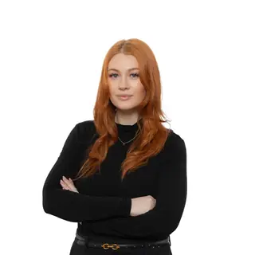

Leo Walshe
Kaufmännische, analytische und deutsch-irische Berufserfahrung.
Persönliche Zusammenarbeit rund um Menschen, Märkte und Unternehmen.
Wir verbinden deutsch-irische Erfahrung mit kaufmännischem Verständnis und Kommunikationskompetenz. Unser Ansatz ist persönlich: ein direktes Gespräch, ein klarer Auftrag und konkrete nächste Schritte.
Kaufmännische, analytische und deutsch-irische Berufserfahrung.

Marketing, Kommunikation und internationale Geschäftsbeziehungen.
Menschen, Märkte und Ziele kennenlernen.
Leistungsumfang und nächste Schritte abstimmen.
Klar kommunizieren und die vereinbarten Ziele verfolgen.
Sie möchten deutschsprachige Fachkräfte in Irland gewinnen, neue Geschäftsmöglichkeiten erschließen oder Ihre nächsten Schritte auf dem irischen Markt planen? Kontaktieren Sie uns.